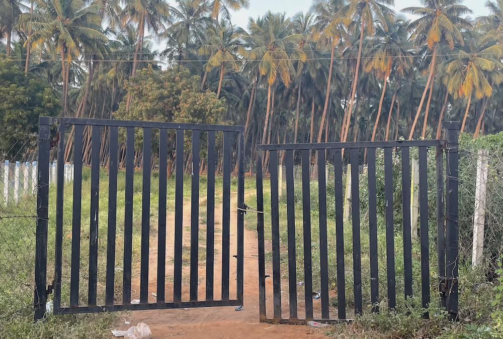
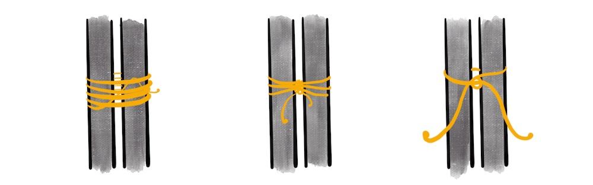
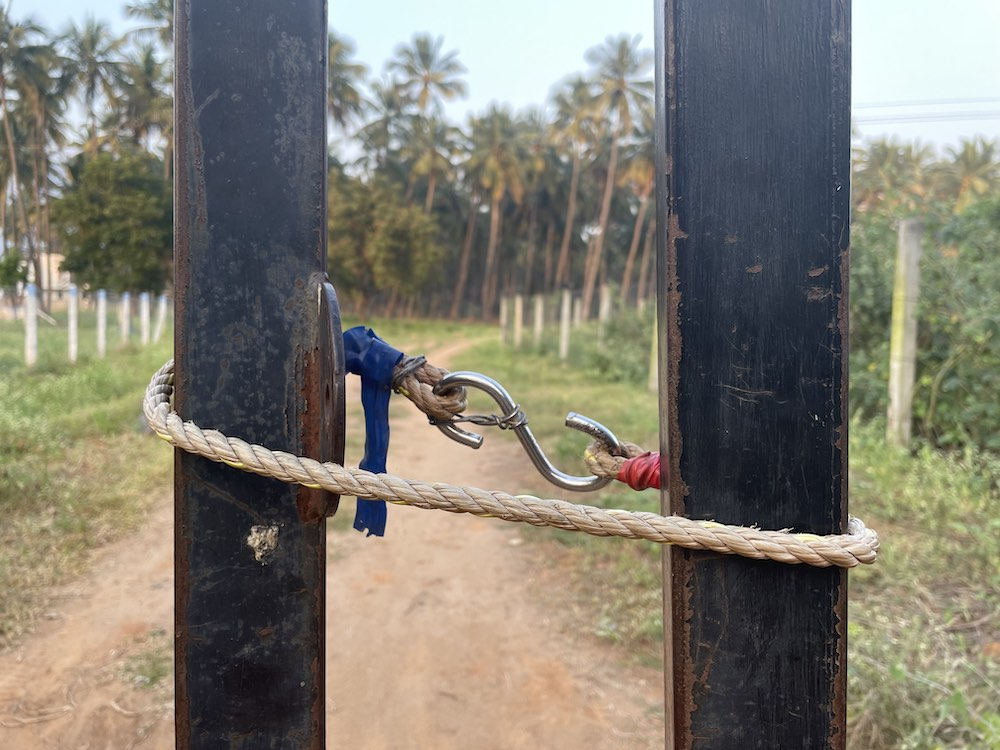

Makeshift Latch
There’s an old steel gate to our farm which doesn’t latch. One of the welds in the hinges gave up, rendering the gate unlatch-able.
Until the gate was fixed, as a workaround, people started to use a rope to keep the gate closed.
So every time someone approached the gate, they
- Untie the rope
- Enter the gate
- Tie the rope back to latch it
Problem
The problem was the knot.
I observed that the knot on the gate changed often, and it was unpredictable. If I were lucky enough, I’d be blessed with a quick- release knot. Else, I’d be spending a good couple of minutes untying the world’s toughest knot.
I can’t be the only one facing this. So I asked around my family; most of them felt the same. Realizing the problem here, I set out to solve it and provide a better experience for everyone.
Goal
To design a latch that is usable by anyone and obviate the knot conundrum.
Users
The gate is used mainly by the farmworkers, cattle herders, and my family. Construction workers are also using it since there’s a building going on inside.
Almost all of them know how to tie a knot. But each one had their own variations. Even I tie a knot that’s different from others. There are a few kids who might not know how to form a knot. And there are the guests, who are the unknown variable here.
Analysis
Once the rope is untied, the user is left with a blank slate.
Unlimited Options
- The user has to choose from the variety of knots they know. Thus increasing both the response time as well as their cognitive load.
Rope length
- The rope length was around 6 feet. Longer than what is required to form a basic knot around the gate.
- The user has an implicit compulsion to use the whole length resulting in complex knots.
- There are also reported attempts of people trying to steal the rope because of the length.
Knot direction ambiguity
- If a user is walking out, they’ll knot from the outside, and if they are going in, the knot is on the inside.
- This uncertainty hinders the subsequent user, who may walk in from the other direction.
Objectives
From the analysis, the requirements were precise. The latch needed to be
- Unambiguous
- Intuitive
- Affordable
- Low profile
Solution
Shortening the length of the rope doesn’t solve the ambiguity. I started to ideate on removing the need for a knot completely.
Ideas
#1 Carabiner
Carabiner GIF (Source: Wikipedia)
First obvious solution was to use a carabiner. I tested it out with one of the farm workers on a dog leash. When asked to unleash the dog, it took them more than 10 seconds to figure out the mechanism. The issue was carabiners are not a familiar object in India.
#2 Hook
Carabiners was ruled out. The next obvious mechanism was to use a hook.
'S' hook with a loop
I couldn’t find a hook with a loop nearby, and had to settle for an ’S’ hook. The rope was cut to length with a loop at one end, and an ’S’ hook at the other.

With the ’S’ hook, the number of possible solutions was reduced to one. People also had the familiarity of using these kinds of hooks before. Removed the knot position ambiguity by securing the hook to the inside of the gate.
The latch in use
Back to Portfolio